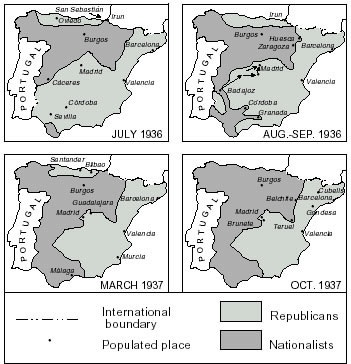
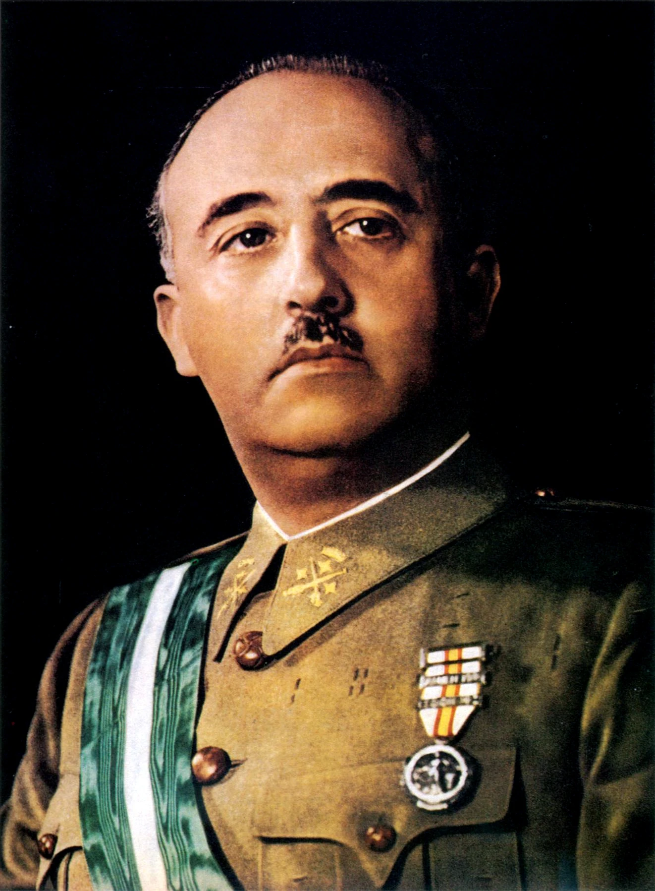
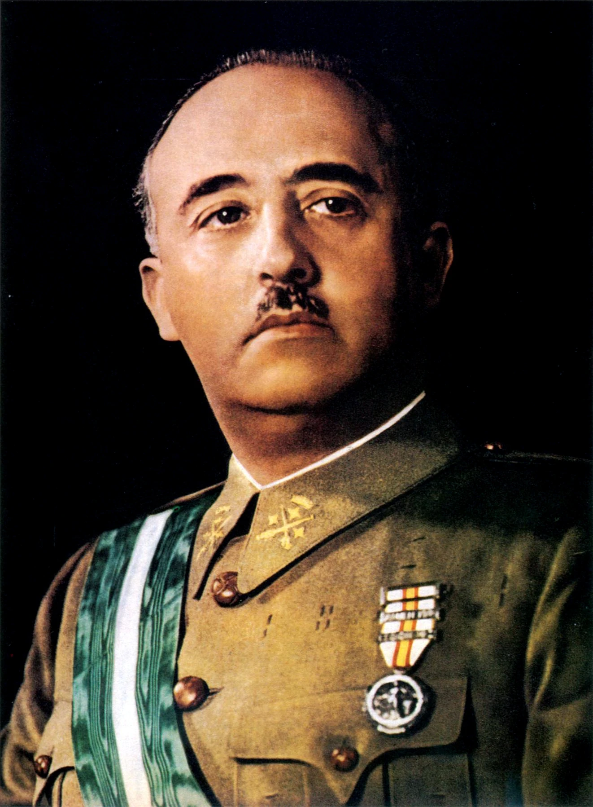

15 Years After The War

After the Nationalists, ruled by Fransisco Franco, won the war, Spain entered a period in Spanish history called the Francoist Spain. This was the time when Franco ruled Spain between 1939 and 1975, when he died. When Franco died, the Spanish country became a democracy. Some effect of the Spanish Civil War were devastating, including great loss of life, human suffering, disruption of society and economy, which led to many economic problems. This also results to the creation of the WW2, because the axis powers were getting even more power, and gaining more army everywhere, also growing more facist people around Europe.
Articles about the war
 Britannica
Independent
Britannica
Independent